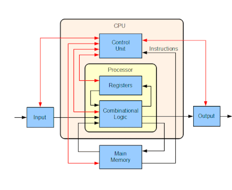

LINKS:
- mainbage
- meaningofcomputerarchitecture
- Instruction set architecture
- Designgoals
- Performance
meaning of computer architecture:
computer architecture is a set of rules and methods that describe the functionality, organization, and implementation of computer systems.
Some definitions of architecture define it as describing the capabilities and programming model of a computer but not a particular implementation.In other definitions computer architecture involves instruction set architecture design, microarchitecture design, logic design, and implementation.
Computer architecture is concerned with balancing the performance, efficiency, cost, and reliability of a computer system. The case of instruction set architecture can be used to illustrate the balance of these competing factors. More complex instruction sets enable programmers to write more space efficient programs, since a single instruction can encode some higher-level abstraction (such as the x86 Loop instruction).[16] However, longer and more complex instructions take longer for the processor to decode and can be more costly to implement effectively. The increased complexity from a large instruction set also creates more room for unreliability when instructions interact in unexpected ways.
The implementation involves integrated circuit design, packaging, power, and cooling.
